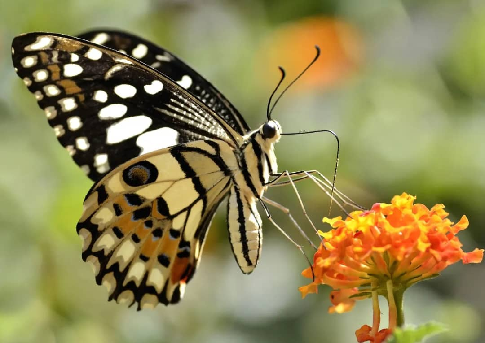
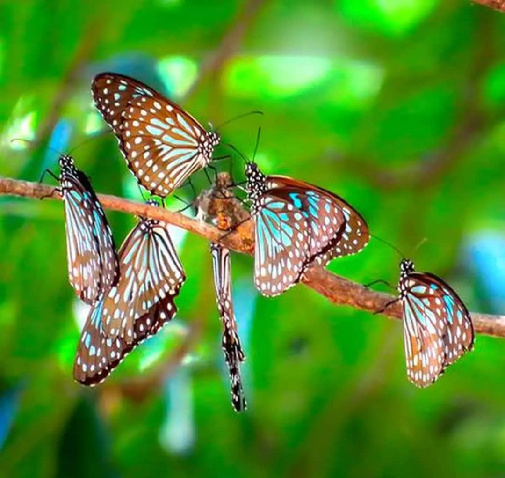
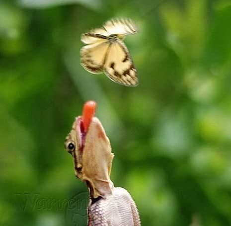
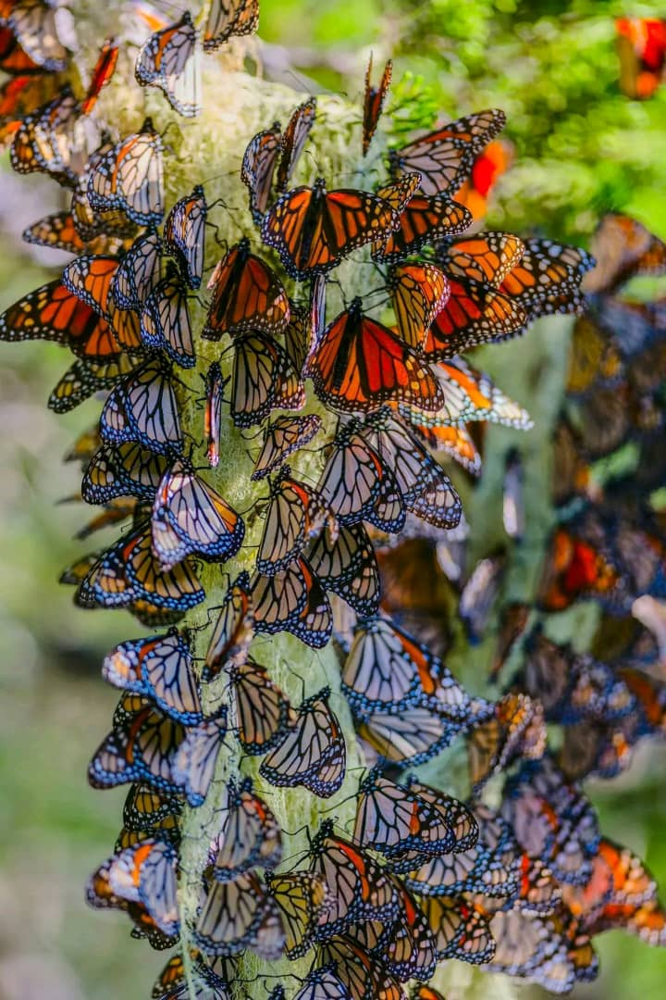
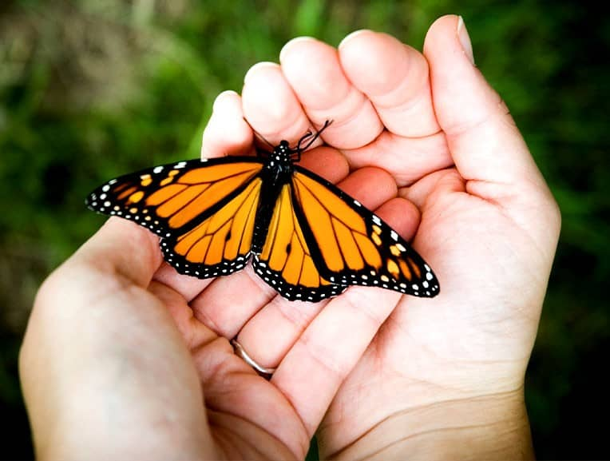
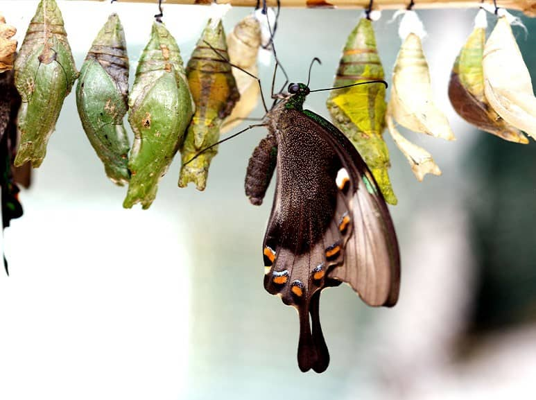

Butterflies are among nature’s most beautiful and fascinating creatures. With their vibrant colors and graceful flight, they bring life to gardens, forests, and meadows. But beyond their beauty lies a much deeper story— butterflies play a vital role in keeping our environment healthy and balanced.
Nature’s Colorful Pollinators
One of the most important roles of butterflies is pollination. As they flutter from flower to flower in search of nectar, they unintentionally transfer pollen, helping plants reproduce. This simple act allows flowers to produce seeds and fruits, which feed countless animals, including humans. While butterflies may not be as fast or efficient as bees, their ability to visit a wide variety of flowers helps maintain plant diversity and ecosystem resilience.
Butterflies as Environmental Indicators
Butterflies are also excellent indicators of environmental health. Because they are sensitive to temperature, pollution, and habitat changes, their presence or absence can tell us a lot about the state of an ecosystem. A sudden drop in butterfly numbers may signal problems like pesticide overuse, deforestation, or climate change. Scientists often study butterfly populations to monitor these changes, using them as natural “early warning systems” for environmental decline.
A Key Link in the Food Chain
Butterflies and their caterpillars are essential parts of the food web. Caterpillars are rich in protein and serve as an important food source for birds, reptiles, and small mammals. Adult butterflies are also eaten by birds, spiders, and other predators. Without butterflies, many species would struggle to find enough food, leading to disruptions throughout the ecosystem. By supporting plant pollination and providing nourishment to other creatures, butterflies help keep nature’s balance in check.
Threats to Butterfly Populations
Unfortunately, butterfly populations are facing serious threats. Habitat loss from urban development, agriculture, and deforestation has reduced the natural spaces they need to thrive. Climate change is also shifting migration patterns and altering the availability of host plants that caterpillars depend on. On top of that, the widespread use of pesticides harms both adult butterflies and their larvae.
Conserving Our Winged Friends
The good news is that everyone can play a part in protecting butterflies. Planting butterfly-friendly gardens filled with native flowers and avoiding chemical pesticides are simple but powerful steps. Conservation groups and researchers are also restoring habitats, studying butterfly behavior, and encouraging people to participate in citizen science projects to track butterfly populations. These collective efforts are helping to raise awareness and restore balance to our ecosystems.
A Symbol of Hope and Harmony
Butterflies are more than just symbols of beauty and transformation—they are living reminders of how interconnected life on Earth truly is. Protecting them means protecting the web of life that sustains us all. When butterflies thrive, so does nature. By valuing and conserving these delicate insects, we ensure a healthier planet for generations to come.